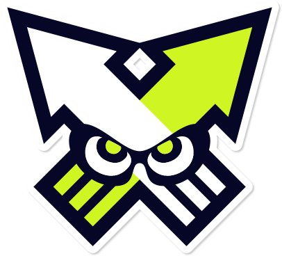

Play your way!
Splatoon has a variety of modes. Each is detailed below. Click on the icon to see sample gameplay.
| Mode Icon | Mode Name | Description |
|---|---|---|
|  | Turf War | Players cover as much of the map as they can in their colour ink. The match ends after three minutes. The team with the most coverage wins. |
| Tower Control | Players escort a Tower to the goal by standing atop it. The match ends either when the Tower reaches a destination, or 5 minutes (plus overtime) has passed. The team that escorts the tower the farthest wins. | |
| Clam Blitz | Players collect clams to create a Power Clam, which is then launched at the opposing team's Clam Basket. Once the Power Clam is launched, smaller clams can be tossed into the basket. Each Power Clam is worth 10 points. Each small clam is worth 3 points. After a set amount of time, the basket reseals and penalty is given based on points scored. The match ends after 100 points are scored, or 5 minutes (plus overtime) has passed. The team with the most points wins. | |
| Splat Zones | Players capture and hold a set area with ink. Penalty is given based on time spent with the zone captured after zones change hands. The match ends after the zone timer reaches 0, or 5 minutes (plus overtime) has passed. The team that has the most points. | |
| Rainmaker | Players carry the Rainmaker -- a large, heavy and powerful weapon that takes a long time to charge -- to a pedestal on the opposing team's side of the map. The match ends after the Rainmaker is placed on the podium, or after 5 minutes (plus overtime) has passed. The team who carries the Rainmaker the farthest wins. | |
| Salmon Run | Players work together to fight hordes of Salmonids, collecting the eggs of larger Boss Salmonids and placing them into a basket. Splatted players can be revived by their teammates. The match ends after three 100-second waves, when all players become splatted at once, or if the team fails to meet egg quota. |